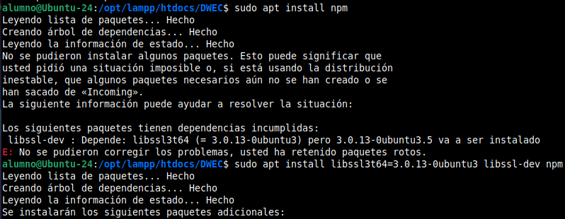
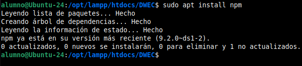
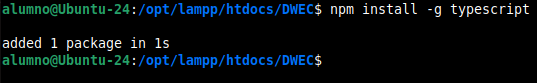
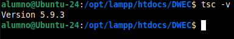

Tema 4 - TypeScript
Ejercicios del Cuarto Bloque - TypeScript
Teoría TypeScript
¿Qué es TypeScript?
Desarrollado por Microsoft, TypeScript es un lenguaje de programación de código abierto que se construye sobre JavaScript. Técnicamente, se define como un superset (superconjunto) de JavaScript; esto significa que cualquier código de JavaScript válido es también código de TypeScript válido. Añade una capa de tipado estático que no existe en el JS tradicional. Como dato clave, los navegadores no entienden TypeScript de forma nativa, por lo que el código se "transpila" a JavaScript puro antes de ejecutarse.
TypeScript es un lenguaje de programación libre y de código abierto creado por Microsoft. Se define como un superset de JavaScript, lo que significa que añade:
- Tipos estáticos.
- Objetos basados en clases.
Está diseñado para facilitar el desarrollo de grandes aplicaciones y puede ejecutarse tanto en el lado del cliente como en el servidor (Node.js).
¿Para qué sirve?
- Evitar errores comunes: Captura fallos antes de que el código se ejecute (en tiempo de compilación).
- Facilitar el mantenimiento: En proyectos grandes, ayuda a entender qué datos fluyen por cada parte de la aplicación.
- Mejorar el trabajo en equipo: Al definir reglas claras sobre objetos y funciones, otros desarrolladores saben exactamente qué esperar de tu código.
- Robustez: Hace que el desarrollo de software sea mucho más predecible y seguro.
Características clave
- Tipado Estático (Static Typing): Permite definir el tipo de dato (como
let edad: number = 25;) para evitar asignaciones incorrectas. - Interfaces y Tipos: Permite definir la "forma" de los objetos, asegurando que contengan las propiedades requeridas.
- Autocompletado (IntelliSense): Ofrece sugerencias precisas en editores como VS Code, acelerando la escritura de código.
- Soporte ES6+: Permite usar funciones modernas de JavaScript y las traduce a versiones compatibles con entornos antiguos.
- Programación Orientada a Objetos: Mejora la implementación de clases, modificadores de acceso (private/public) y genéricos.
¿Por qué aprender TypeScript?
Es el lenguaje base utilizado por Angular (a partir de la versión 2), el framework que estudiaremos próximamente.
Nota: Aunque usemos TypeScript, el navegador sigue ejecutando JavaScript. Todo el código TypeScript se transpila a JavaScript estándar (generalmente ECMAScript 5).
Instalación y Configuración
Para comenzar, sigue estos pasos:
1. Instalar Node.js.
bashnpm install -g typescript
Nos puede dar errores porque a veces apt retiene paquetes rotos de npm, por lo que podemos utilizar estos comandos:
bashsudo apt --fix-broken install
bashsudo apt install libssl3t64=3.0.13-0ubuntu3 libssl-dev npm
Esto debería salir así:



2. Instalar el compilador de TypeScript mediante npm:
Para comprobar la versión instalada:
bashtsc -v

Cómo trabajar
Una vez creado tu archivo con extensión .ts, puedes compilarlo ejecutando:
bashtsc nombre-fichero.ts
Editor recomendado: Se aconseja utilizar Visual Studio Code, aunque otros editores disponen de plugins para dar soporte a este lenguaje (Herramientas de JetBrains).
Enlaces de interés
Para más información para aprender TypeScript, dale al siguiente botón.